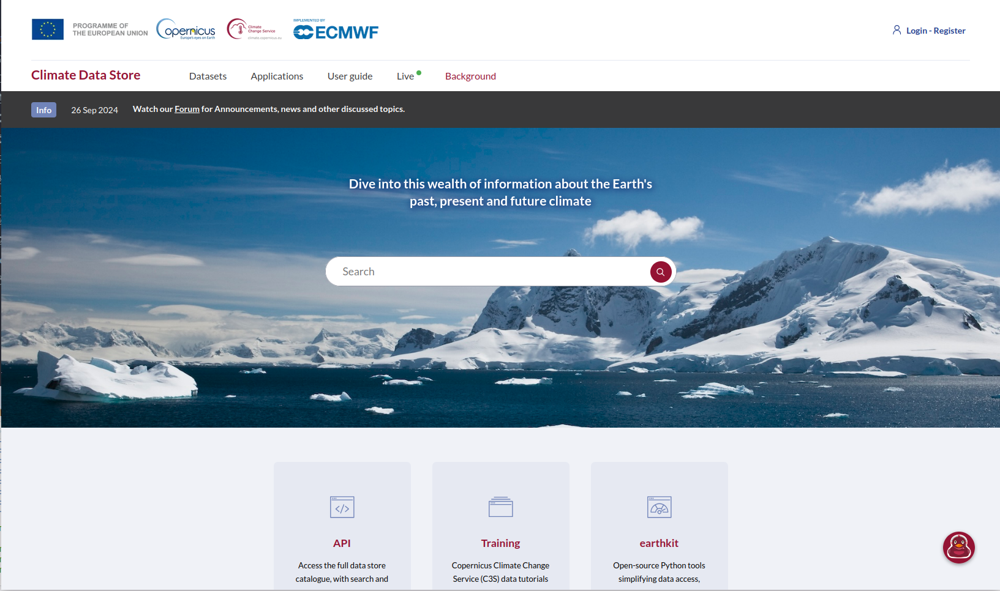
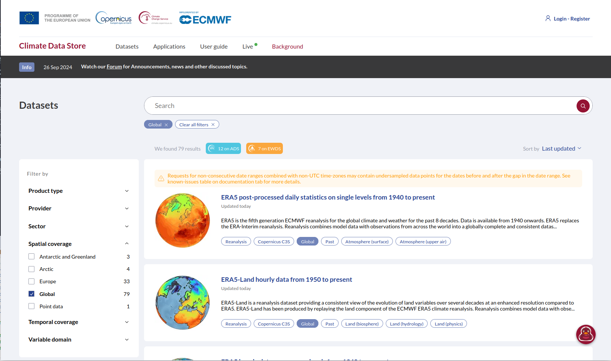

Climate Data Store
climate portal
observed
reanalysis
seasonal forecast
climate projections
rainfall
temperature
humidity
CRU
ERA5
Copernicus Climate Data Store functions as a one-stop shop to explore data on the Earth’s past, present and future climate.
About the data portal
The Climate Data Store (CDS), is a comprehensive and open access platform operated by European Centre for Medium-Range Forecasting (ECMWF) for the Copernicus Climate Change Service (C3S).
CDS is a Climate Data Repository providing access to a wide range of datasets including Observations (satellite and in-situ), Climate Reanalyses, Seasonal Forecasts, Climate Projections and Climate Indices. For each dataset, CDS provides an overview, download and documentation pages.
The site provides Training material to facilitate the use of datasets on the CDS. These include practical data processing workflows based on Jupyter notebooks; e-learning modules on key concepts behind the climate data types as well as learning resources from training events.
The site uses, and provides access to, earthkit which is a new open-source Python project developed by ECMWF that offers robust tools to accelerate workflows in weather and climate science. It streamlines data access, processing, analysis and visualization. At the time of publishing, earthkit is still in the BETA stage of development.
The CDS hosts a number of Applications which allow users to explore and visualize the historic, present and future climate.
Accessing the data portal
The Climate Data Store can be accessed via the following url - https://climate.copernicus.eu/climate-data-store
Users need to register or login to access many of the features on the climate Data Store (the login tab is found in the top right corner of the page). The CDS utilizes ECMWF user account which enables users to access the CDS as well as other ECMWF resources, events and courses. On CDS the user credentials are primarily used to track user activity, manage data access and ensure compliance with data licenses.
Access to the datasets is provided both interactively (manually over the web) or programmatically through an API service. The CDS provides an extensive User guide section which includes; CDS Documentation which provides users with a deeper understanding of what the Climate Data Store is and how best to use it; guidance on how to download data interactively via the CDS website and also how to get data programmatically via an API service.
What datasets are available
The CDS provides a catalogue which lists available datasets. Users can filter this extensive list of datasets through faceted or text-based searches. The site hosts a number of European-focused datasets, so it’s helpful to filter by Spatial coverage to identify those datasets with Global coverage as these would include the southern Africa domain.

The datasets can also be filtered by Product type. The definitions of the types is provided below since they may not be easily understandable to a non-climate audience
Climate indices: Quantitative measures derived from climate variables (e.g., temperature, precipitation) that capture key aspects of climate variability and change. Examples include the El Niño-Southern Oscillation (ENSO) index and the Standardized Precipitation Index (SPI).
Climate projections: Simulated future climate conditions based on climate models that use different greenhouse gas emission scenarios. These projections provide insights into potential long-term changes in climate but are subject to uncertainties related to model assumptions and future human activities.
Derived reanalysis: Climate datasets produced by applying additional calculations or transformations to primary reanalysis data. These may include indices, bias-corrected fields, or interpolated datasets that enhance usability for specific applications.
In-situ observations: Climate data collected directly at a specific location using ground-based instruments, such as weather stations, buoys, and radiosondes. These measurements provide high-accuracy climate information but have limited spatial coverage.
Reanalysis: A comprehensive dataset generated by combining historical climate observations with numerical weather models to reconstruct past climate conditions. Reanalysis datasets provide globally consistent and gridded climate information, widely used in climate research.
Satellite observations: Climate data collected by remote sensing instruments aboard satellites, covering various atmospheric, oceanic, and land-surface parameters. These observations provide global coverage and long-term records of climate variables such as temperature, precipitation, and sea surface height.
Seasonal forecasts: Predictions of climate conditions (e.g., temperature, precipitation) for upcoming months to a year, based on climate models and historical data. These forecasts help anticipate climate variations such as droughts, monsoons, and extreme weather events.
Some key datasets that may be of interest are:
Satellite observations
- Precipitation monthly and daily gridded data from 1979 to present derived from satellite measurements The Global Precipitation Climatology Project (GPCP) provides global estimates of precipitation as monthly means and daily means, based on estimates using microwave and infrared satellite imagery. The dataset utilizes advanced data processing and calibration techniques to ensure accuracy and constancy of data.
Reanalysis
ERA5 hourly data on single levels from 1940 to present The ERA5 reanalysis outputs are grouped into datasets or catalogue entries. This dataset includes key variables of importance to the malaria modelling community including precipitation, near surface air temperatures and winds (and variables which can be used to calculate relative humidity). The spatial resolution is relatively course (0.25°), but it provides data at very high temporal resolution (hourly) and the dataset is updated daily with just a 5 day latency.
ERA5-Land hourly from 1950 to present ERA5-Land is a enhanced spatial resolution version of ERA5 providing data at 9km. It provides a large range of climatic, surface, vegetation and other variables. The dataset is updated daily with just a 5 day latency.
Seasonal forecasts
- Seasonal forecast daily and subdaily data on single levels This catalogue provides a multi-system seasonal forecast service. CDS collects, processes and combines the output from several seasonal forecast models and makes them available of user-relevant applications. Forecasts of key variables such as temperature and precipitation are available for retrospective and future seasonal analysis
Climate projections
- CMIP6 Climate projections This catalogue provides daily and monthly global climate model projections data from the sixth phase of the Coupled Model Intercomparison Project (CMIP6). A range of variables are provides from a large number of models covering both the historical and future period represented by eight future Shared Socioenomic Pathway (SSP) scenarios.
Key points to consider
Strengths
The Climate Data Store aims to be a one-stop shop for climate data and analysis. It hosts a very large number of key datasets and provides detailed guidance information, training and tools.
Limitations
The CDS is large and can be confusing and intimidating. The focus is on Europe and not southern Africa.
Citing the data portal
Copernicus Climate Data Store (CDS) hosted by the European Centre for Medium-Range Weather Forecast (ECMWF), https://cds.climate.copernicus.eu/
Terms of use
The CDS requires users to register before any content can be downloaded. Datasets or content made available through the site may have different licensing terms which users need to agree to before access to the content is granted.
The full terms of use can be found on the CDS terms of use